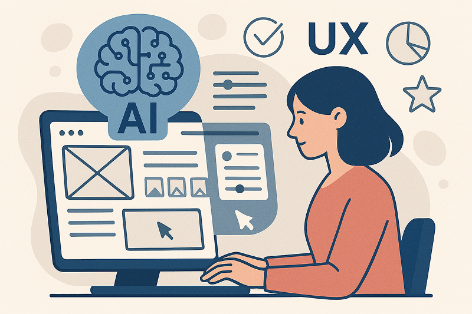
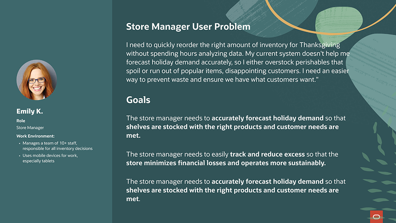
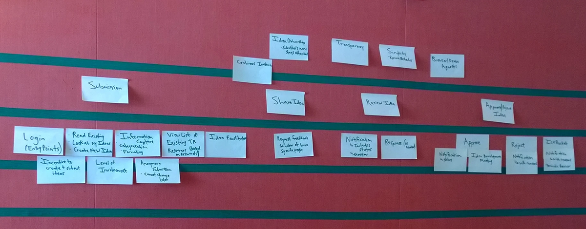
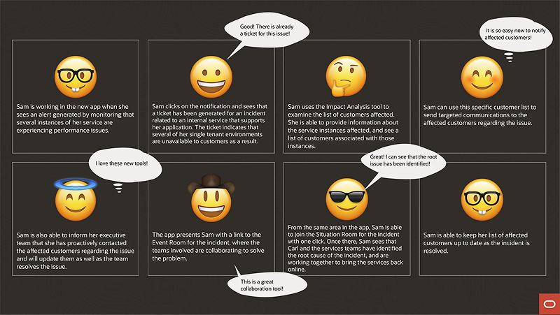
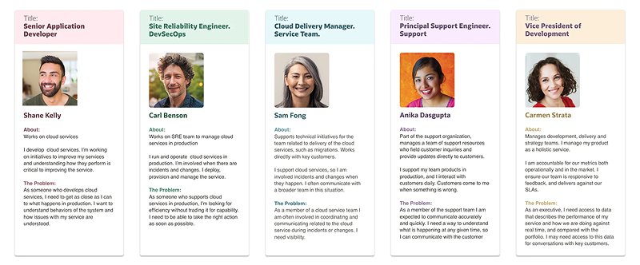
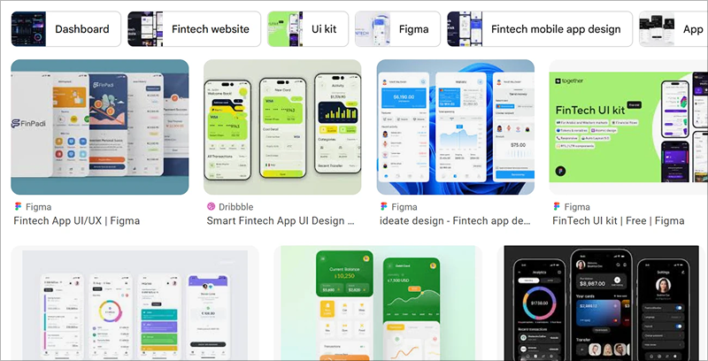
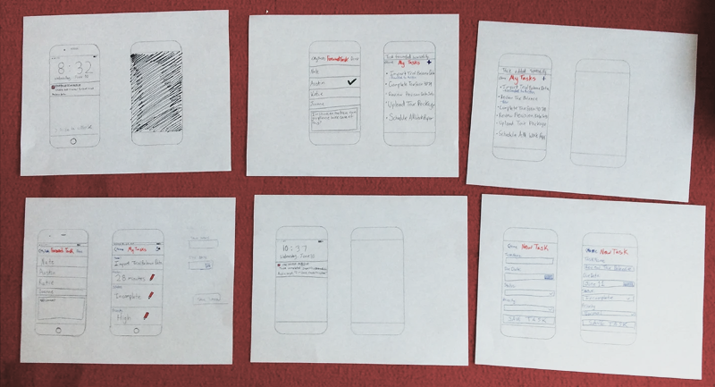
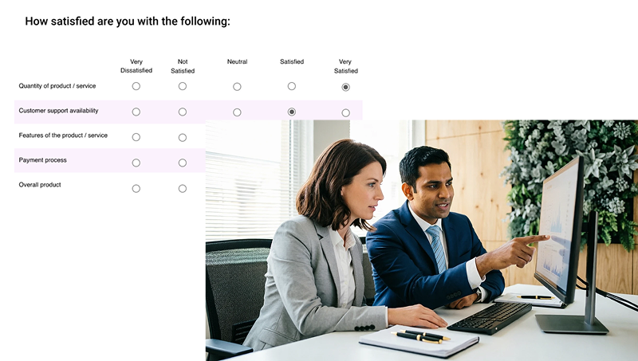
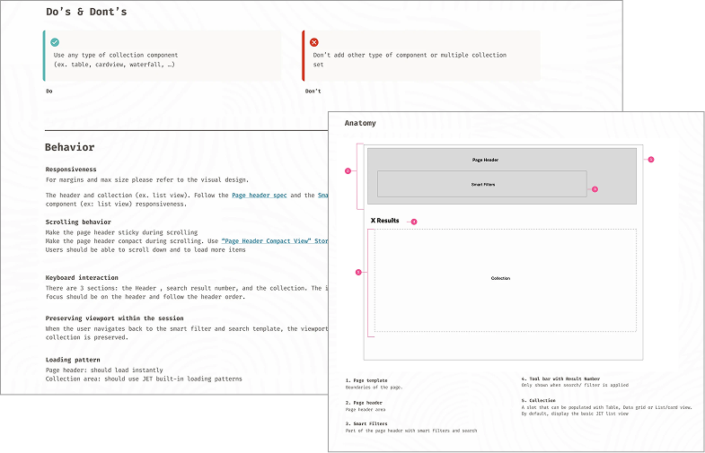
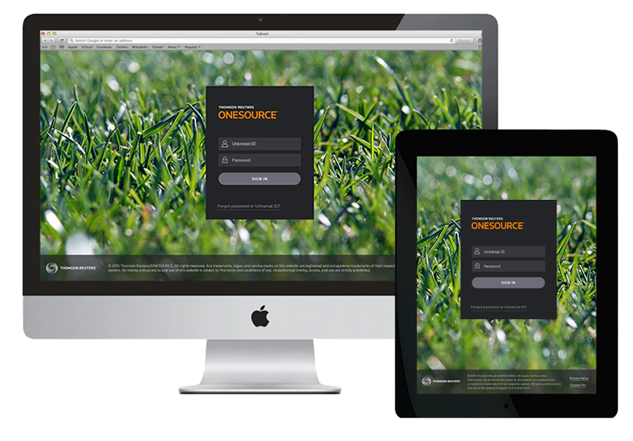

UX Process and Use Cases
Every organization and project presents unique challenges, goals, and constraints, so my design process adapts to fit the problem. This section highlights key use cases that demonstrate how I apply these methods in practice, along with the research techniques and design processes that my teams and I have refined over the years.
Since 2025, I've integrated AI‐powered tools into the design process. As UX practices and ways of working rapidly evolve alongside AI, I continuously adapt how UX teams operate to ensure both efficiency and quality. See the Design with AI section for examples.
AI for UX
Using AI tools is still new for everyone, but my team and I have been successfully using them for research, design exploration, prototyping, understanding requirements, and interviewing users. This has helped us streamline our processes and allowed us to focus more on solving creative and complex problems. See more Design with AI

Defining User Problems & Goals
The first step for successful UX is clearly understanding the problem space and aligning on measurable user objectives. This foundation keeps every decision purposeful, focused, and user-centered.

Workshops & Interviews
Through structured workshops and interviews with key stakeholders and end users, teams gain a shared, aligned understanding of the product, requirements, and goals.

Workflow scripts and user flows
User‐flow diagrams and scripts visualize complex systems and highlight key journeys, while workflow scripts distill those journeys into clear, step‐by‐step interactions that guide optimal UX/UI patterns and align teams before high‐fidelity design begins.

Persona Creation
Personas ground the design process in real user needs, guide persona-specific layout decisions, establish information hierarchy, and highlight differences in user journeys and mental models.

Gathering and Understanding Requirements
Gathering and understanding requirements is a core design phase that involves leading stakeholder alignment meetings, reviewing existing documentation and legacy systems, using UX‐friendly templates to translate business needs into actionable constraints, and collaborating closely with product and engineering to fill gaps and clarify ambiguity.
Competitive Analysis
Evaluating how similar problems are solved across the market is essential for identifying industry standards, uncovering innovation opportunities, and delivering differentiated, user-centric solutions.

Sketching and Design Explorations
Before moving into digital tools, I sketch concepts on paper or whiteboards to quickly explore ideas. More recently, I've begun using AI tools and well‐crafted prompts to generate and iterate on sketches during this early exploration phase. See some AI sketches here.

Usability Testing & Surveys
Usability testing provides direct qualitative insight to validate assumptions and refine the experience. Targeted surveys add quantitative scale, together offering a balanced view of user needs, behaviors, and satisfaction across product stages.

Specs & Annotations
I have extensive experience delivering highly detailed annotations and standards documentation, tailoring each project to its unique requirements. As AI becomes integrated into design workflows, the way teams handle deliverables is evolving, making it essential to keep processes aligned with this new environment.

High-fidelity designs & Wireframes
Please explore this portfolio to see examples of high-fidelity designs, wireframes, and rapid prototypes, including those created with AI tools. You can find additional examples in my previous Behance portfolio.
